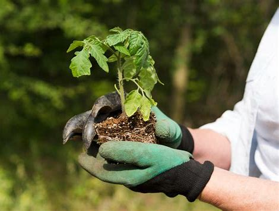

Agribumi is a comprehensive platform designed to revolutionize the agricultural industry by leveraging real-time data and technology. It integrates various tools and services to optimize farming operations, improve efficiency, and enhance productivity.The buyer acknowledges the quality, and it is reported back in case of a dispute. An independent lab tests the samples, and once the buyer acknowledges, payment is released to the seller or bank, depending on the arrangement.settlement procedure is unerring due to trained personnel at the delivery location for collecting the samples, sealing and marking them with utmost care.
Real-time Monitoring
Monitor crop growth, soil conditions, and weather patterns in real-time using IoT sensors and satellite data.
Predictive Analytics
Utilize machine learning algorithms to predict crop yields, pest outbreaks, and optimal harvest times.
Supply Chain Management
Optimize logistics and distribution with blockchain technology for traceability and transparency.

Marketplace Integration
Connect with input suppliers, output buyers, and agricultural service providers through integrated marketplace solutions.Optimize logistics and distribution with blockchain technology for traceability It integrates various tools and services to optimize farming operations, improve efficiency, and enhance productivity.The buyer acknowledges the quality and transparency and weather patterns in real-time using IoT sensors and satellite data.